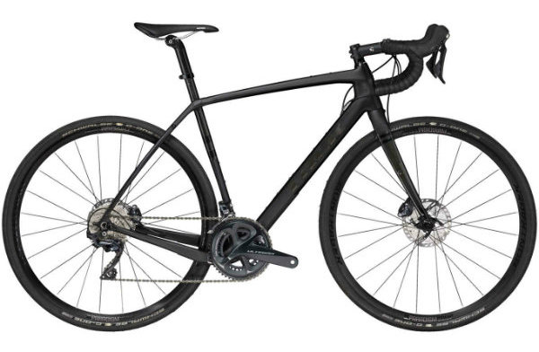
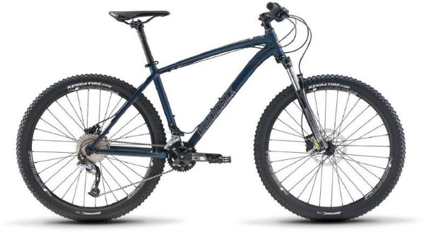
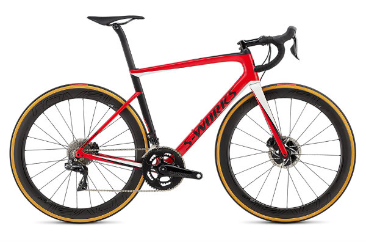
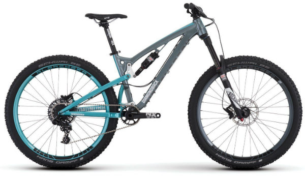
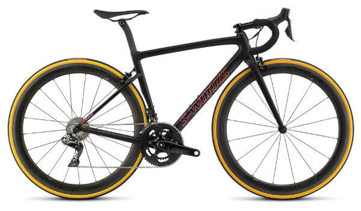

Bikes for Men
Trek's Checkpoint SL 6
Price: $3,799.99
The Checkpoint SL 6 is a carbon gravel bike without limits. It's designed to take you places you'd never reach on a standard road bike—like the mud-caked finish line of the world's greatest gravel races. A lightweight OCLV Carbon frame with gravel-smoothing IsoSpeed, a full Shimano Ultegra drivetrain, and extra mounts for gear and accessories make Checkpoint SL 6 a true gravel powerhouse and the best choice for serious all-road adventurers.
Diamondback's Overdrive 2 29 C
Price: $2,549.99
The Overdrive 2 29 C is, first and foremost, built for speed; something that comes naturally to the bike, thanks to its featherweight carbon monocoque frame and top-shelf componentry. We’ve decked out this whip in RockShox’s race-proven SID RLC fork, a SRAM GX Eagle wide-range drivetrain (the hills will never know what hit them), powerful SRAM Guide R hydraulic disc brakes, and our own tubeless-ready Blanchard 25R wheelset.If you’re lining up at the next race, or simply racing your own previous records, this is your weapon.
Specialized's S-Works Tarmac Disc
Price: $11,000
The new S-Works Tarmac Disc is built to be fastest everywhere. On Long climbs, windy flats, Grand Tour stages, and local fondos. Now with our disc brakes, we've managed to make it, well, even more complete. We utilized advanced aerospace composite optimization software to revolutionize the construction and layup of the 12r carbon. It's the most advanced material, and schedule, we've ever made and this allowed us to shed nearly 200 grams.

Bikes for Women
Trek's Top Fuel 9.8 SL

Price: $5,199.99
The Top Fuel 9.8 SL Women's is the full suspension XC mountain bike for riders who want every lightweight advantage. An OCLV Mountain Carbon frame, Bontrager carbon wheels, FOX suspension, and lightweight performance parts make this bike the perfect sidekick for serious XC riders who want a lightweight rig with the added comfort of touchpoints designed for women and is right for riders who want a rocket of a bike to tackle cross country racing and marathons.
Diamondback's Clutch 1
Price: $1,899.99
Our female riders love how our new suspension design brings a mix of climbing efficiency and downhill ability to a trail bike. The system has allowed us to make lighter, shorter travel bikes that are just plain fast everywhere. The Clutch 1 is a bike for the female rider who’s looking to ride it all: climbing backcountry classics to flowing new machine-built trails. A short rear end and longer cockpit keeps the bike stable at speed, while still being a blast in the corners.
Specialized's Women's S-Works Tarmac
Price: $10,000
It's simple—when someone attacks on a climb, you want to respond quickly and with confident assurance. And when it's you who's breaking away, you need to accelerate with snappy intensity and leave everyone in your dust. The Women's S-Works Tarmac SL6 with Shimano Dura-Ace Di2 is born to race to any strategy, and it's at the absolute top of the women's race bike heap in terms of performance, quality, technology, and handling. This mountain bike is made for today’s aggressive riders.